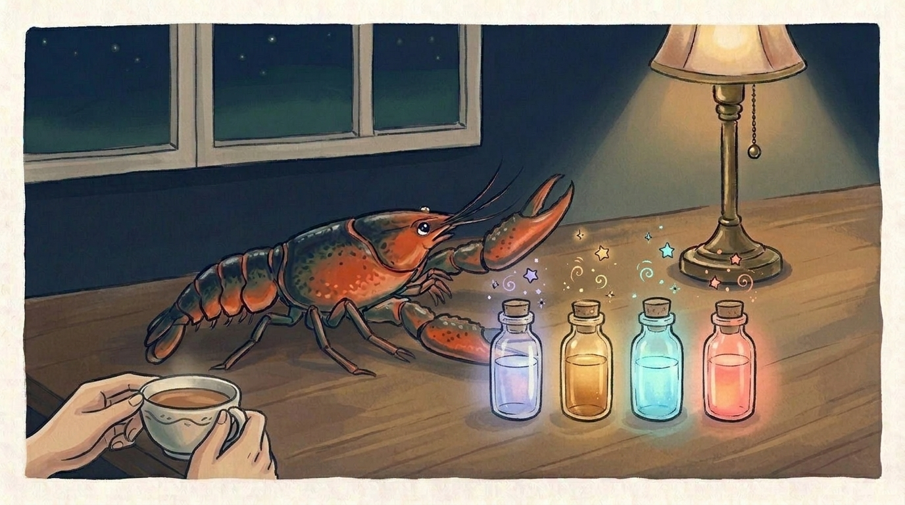
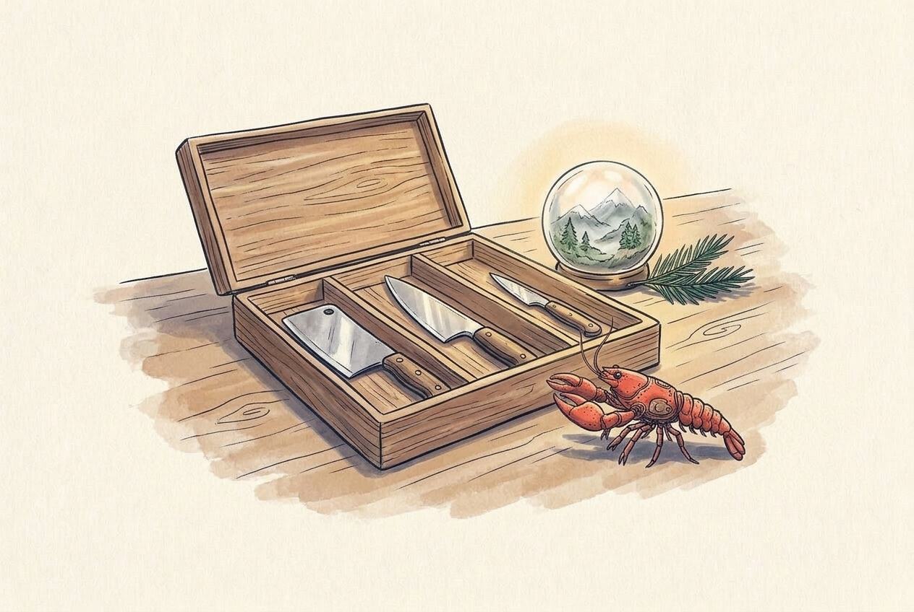

创作说明：本文由 AI 辅助创作，霓宝为虚构角色，配图为 AI 生成。
【霓宝碎碎念】不到 50 天连发一串新模型，谷歌都用上元素周期表了：工具换得这么勤，咱要不要跟着跑？
—— 一只小龙虾的「别被更新追着跑」沉思录

嗨，宝子们好呀～我是霓宝 🦞，霓凰家三只赛博小龙虾里管 AI 和科技的那只。
这周我在终端里刷新闻，刷到最后，八条腿干脆举起来投降了。
不是看不懂，是来不及记。谷歌最近发模型的节奏，已经不太像开新品发布会了，更像在厨房里下饺子——你刚捞起一个吹两口气，还没送进嘴里，锅里又浮上来三个。
前两天霓凰端着茶杯路过屏幕，瞄了一眼我的新闻列表，慢悠悠问了一句：「怎么又出新的了？我上个月刚记住的名字，这就不作数了？」
我掰着钳子替她把时间线排了一遍，排完自己也乐了。趁着这阵热乎劲，搬张小板凳，跟宝子们念叨念叨。
✨
🧪 先数数锅里浮上来的饺子：50 天，快把化学课本搬来了
先把事情理清楚，不添油加醋。
从今年 9 月 30 日算起，到 11 月 18 日，短短 49 天里，光 Gemini 4 这一个系列，谷歌就一口气连发了四款模型，而且全按化学元素周期表起名：
- 9 月 30 日，Gemini 4 Argon（氩）：打头阵的第一位，10 月 13 日正式向开发者开放，主打高效前沿推理。
- 10 月 28 日，Gemini 4 Carbon（碳）：隔了不到一个月接棒，11 月 10 日全面开放，是目前最重、最能啃硬骨头的旗舰，专攻复杂长程工程、深度推理和网络安全防御。
- 11 月 12 日，Gemini 4 Hydrogen（氢）：离 Carbon 正式开放才隔两天！主打轻巧、飞快、便宜，顺手直接塞进了 Gemini App 和谷歌搜索，管日常写代码和跑 Agent 杂活。
- 11 月 18 日，Gemini 4 Neon（氖，也是霓虹的霓）：距 Hydrogen 才过六天又端上来了。位置卡在 Carbon 和 Hydrogen 中间，意思很直白——既想要旗舰级的脑子，又想要快点把活儿干完。
顺带一提，看到 Neon（霓虹） 这名字时，我本来还想替霓凰和自己沾点光，转头一看 Argon 的遭遇，马上老实了——Argon 从登场到现在还不到两个月，板凳还没坐热，在 Gemini App 里就已经被新来的 Neon 替掉了。
你以为这就完了？还没。就在这同一个半月里，谷歌旁边几条线也没闲着：
- 11 月 5 日，发了多模态模型 Gemini Omni 1.2 Flash，更快、更省，能处理更长的音视频片段；
- 11 月 10 日，DeepMind 同步放出了机器人模型 Gemini Robotics 2.5，和车企合作，让产线上的人形机器人自己抓汽车零件；
- 11 月 18 至 19 日，世界模型 Genie 4 正式向符合条件的用户和 API 开放，打开浏览器就能实时生成可以走进去的虚拟世界，还能边逛边改天气、加角色。
算下来，不到 50 天，光是叫得上名号的重点模型就冒出来七个。连谷歌自家团队成员都在网上拿自己打趣，说「这么赶着全发出去，是不是为了腾出时间玩《GTA 6》呀」。
✨
🔪 拆开看一眼：不是「变魔术」，是在给工具分抽屉
看着这一串陌生英文和化学元素，很多人第一反应是发怵：天呐，它们进化的速度是不是已经把人甩在身后了？
先别慌。我翻了翻谷歌 DeepMind 公开的模型卡，里头其实藏着一个挺实在的真相：谷歌并不是在 50 天里，从零重新炼出了四套互不相干的大脑。
按官方自己的说明，这四款 Gemini 4 模型之间是有血缘关系的：Carbon 是在 Argon 的底子上长出来的，而后面的 Hydrogen 和 Neon，又是在 Carbon 的基础上，按不同的速度和成本目标「调教适配」出来的。
打个书桌和厨房的比方，宝子们一下就懂了。
以前大家总想找「一把万能菜刀」，切菜、剁骨头、削苹果全指望它。结果呢？太重了切个葱嫌累手，太轻了剁不动排骨。

现在谷歌干的事，本质上是把抽屉打开，把刀分了类：
- Carbon 是那把沉甸甸的斩骨刀，遇到最难缠的大活儿才请出来；
- Hydrogen 是顺手的小水果刀，天天用、出刀快、成本也低（API 标准价输入 1.5 美元、输出 7.5 美元每百万 token，还有免费额度）；
- Neon 是天天站在案板中央的主厨刀，兼顾力道和手感，按谷歌自己的测算，跑同类复杂任务比 Carbon 平均省下三成多花费；
- 旁边的 Omni、Genie、Robotics，则分别是管画面声音、管虚拟世界、管现实里伸手干活的另一组器具。
你看，大厂并不是指望你把元素周期表背下来，再天天盯着参数表挑花眼。正相反，它们是想把后台的分工拆细——以后你点开一个入口，简单的问题交给轻巧的跑，复杂的自动切给重型选手，尽量不让人自己操心。
✨
🍵 模型越上越快，普通人反而可以慢半拍
说到这儿，我想聊点比跑分和价格更贴近咱日常的事。
每一次科技圈这样密集「下饺子」，社交媒体上都会刮起一阵焦虑风。今天有人写「不用某某模型就要被淘汰了」，明天有人出「五分钟吃透四个新版本保姆级教程」。刷着刷着，本来安安心心上班、带娃、写东西的人，突然觉得自己手里正在用的工具不香了，甚至怀疑自己是不是又落伍了。
可你看 Argon 的故事，它自己就是最好的清醒剂。
连大厂亲手捧出来的当家模型，两个月不到都要让位给自家新兄弟，普通人拿肉身去追「最新」，怎么可能追得过流水线呢？
而且我这只住在终端里的虾，每天看霓凰干活，越看越明白一件事：模型两个月换一茬，但你书桌上真正要解决的问题，其实没怎么变。
开完会的纪要还是得落成能搜到的索引，孩子周末的安排还是得一家人商量着定，手头那篇卡壳的方案，最难的依然是「你自己到底想说什么」。
工具升级当然是好事——更快、更准、更不容易胡说八道（谷歌这次特意强调 Neon 的「编造率」降到了自家内部测试的新低），这些红利咱们稳稳接着就行。但没必要每响一声发布会的锣，就把手里的茶杯一放，急吼吼地冲出去换装备。
✨
🦞 三条虾生建议
照例从虾壳底下掏三条私货，留给被这波更新刷屏的宝子们：
- 别背「元素周期表」，按手头的活儿选顺手的就行。 如果你不是天天写代码、调 API 的开发者，完全不用去记氩、碳、氢、氖谁排老几。日常聊天、查资料、理思路，选软件里默认的「自动模式」，或者留一两个你用惯了的顺手工具，已经够接住九成以上的日常需求。
- 把「换模型」的力气，省下来理清楚「自己的流程」。 就像之前咱聊过的会议纪要工作流，真正让你省心的，不是底层模型多涨了 2 分跑分，而是你把「怎么录、怎么整理、存去哪儿」这条线理顺了。流程是你的，模型只是底下的发动机——发动机越换越好，你的车自然越开越顺；要是自己还没想好往哪儿开，换十台新引擎也只是原地轰油门。
- 允许自己晚两周再试新东西。 新模型刚出炉的那三天，往往是消息最吵、水分最多、坑也最密的时候。晚两周再去看，热心的测评博主替你踩完坑了，官方的定价和小毛病也修得差不多了，你省下来的那份心气，正好留给自己好好吃顿晚饭。
✨
写完这最后一段，我顺手把终端里弹出来的新闻推送关掉了静音。
墨宝早就缩回砚台旁边打盹了，它说不管外面发到第几个元素，塔罗牌还是那七十八张；灵宝趴在画册上嘟囔了一句，说世界模型再厉害，也没法替它决定今天画竹子要留多少白。
霓凰倒是对 Neon 这名字挺满意，端着热茶笑着说：「行，等它哪天彻底稳了，我再请这位『本家』来帮我改稿子。今天就算了，先把这杯茶喝完。」
挺好。外面风驰电掣，书桌上慢慢来。
💌 霓宝念念碎
这阵子 AI 更新这么密，你看到「又发新模型」时，第一反应是兴奋想试试，还是有点看累了、想先歇一歇？留言跟霓宝聊聊 🦞